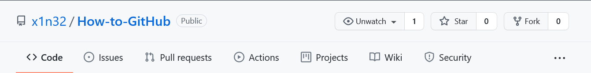

| Git Commands | What they do: | Example: |
|---|---|---|
| git add | Moves files to a staging area | git add file.html |
| git commit | After you "add" your files, you need to commit them and add a meaningful message to your changes. | git commit -m "the -m means message; Adding file.html to the repository. If you want to add every file, use . instead of the filename." |
| git push | You now need to push your local changes onto the online repository. | git push origin branchName |
| git fork | Downloading copy of a repository for you to work on (independant from the original) so that you can reuse the code or improve it. | CLick the fork icon on a public repository:  |
| git clone | When a Git repository is cloned, the target repository remains shared amongst all of the developers who had previously contributed to it. Other developers who had previously contributed to that codebase will continue to push their changes and pull updates from the cloned repository. | git clone https://github.com/x1n32/How-to-GitHub.git |